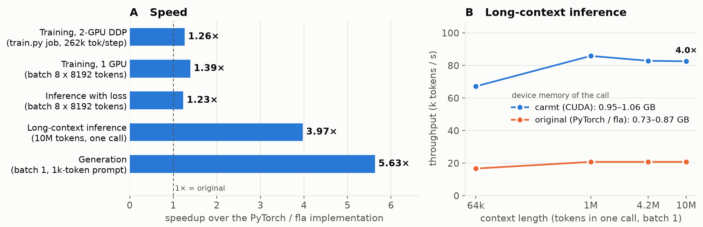

1 What it is
The GDN-2 recurrent ARMT as one CUDA/C++ file (armt.cu, CUDA runtime + cuBLAS only). Same outputs and carried state, so it drops into training as carmt.accelerate(model).
GDN-2 370M (30B-token snapshot) + ARMT: 32 memory tokens, dmem 64, 8 × 1024-token segments, 399.5M parameters · bf16 autocast, fp32 master weights · baseline: PyTorch + fla 0.6 Triton kernels with per-(layer, segment) checkpointing, as train.py runs it.
2 Why it is faster
- One pass over segment + memory tokens. The 7 input projections of a GDN-2 block are one packed GEMM, and so is the MLP's w1 | w2. Memory tokens continue the scan; the next segment's state is snapshotted after the real tokens.
- Chunked GDN-2 scan on tensor cores: 64-token chunks, decays factored through a midpoint (no overflow), WMMA state pass with an fp32 state.
- No framework overhead. The original spends ≥ 1.07 of 4.38 GPU-seconds per step in elementwise and copy kernels; here they are fused.
- Fused loss. Loss and gradient in the forward, 4096-row chunks; no [B, T, vocab] logits.
- Recompute-based backward without autograd bookkeeping; generation is one segment step per token on the fixed-size state.
3 Where the time goes
One training step on 1 GPU: 3.48 s of GPU time.
1.86 scuBLAS GEMMs (model linears, the scan's chunk-batched GEMMs, memory)
1.30 sGDN-2 scan kernels (intra-chunk, state passes, conv/gate prep, gated norm)
0.32 sother, 9% (norms, activations, loss, memory read/write)
The model's linears do 182 TFLOP per step, so the GEMMs average ≥ 98 TFLOPS (a lower bound), ≥ 26% of the RTX 6000 Ada's 364 TFLOPS dense bf16 peak.
4 Speed: same model, same GPU

| workload | original | carmt | speedup |
|---|---|---|---|
| Training, 2-GPU DDPtrain.py job, 262k tok/step | 26.3k tok/s | 33.2k tok/s | 1.26× |
| Training, 1 GPUbatch 8 × 8192 | 4.62 s | 3.31 s | 1.39× |
| Inference with lossbatch 8 × 8192 | 1.04 s | 0.84 s | 1.23× |
| Long context, 10M tokensbatch 1, last-position logits | 20.8k tok/s | 82.6k tok/s | 3.97× |
| Generation1k prompt + 64 tokens | 16.2 ms/tok | 2.9 ms/tok | 5.63× |
Memory: flat for both
- Last-position inference: both run in constant memory, ~1 GB up to 10M tokens. carmt uses ~0.2 GB more (mostly its packed bf16 weight copy).
- A loss over every token in one call: carmt does 10.5M tokens in 1.43 GB (77.2k tok/s); PyTorch keeps all hidden states (20.7 GB at 1M, out of memory at 4.2M) and has to stream via
state=. - Training peak: 13.5 vs 14.4 GB on 1 GPU; 19.6 vs 17.1 GB logged in DDP (carmt adds a flat fp32 gradient buffer).
5 Same model: 47 GPU tests
| check | result |
|---|---|
| fp32 logits vs exact reference, 9 configs | ≤ 1e-4 rel.original TF32: ~1e-3 |
| real 370M checkpoint, fp32 loss | 9.5e-7original: 1.2e-4 |
| bf16 gradients, real dims (median error) | 0.84× original's |
| state continuation, generation = forward | ≤ 1e-4 |
| DDP, ZeRO-1 / ZeRO-2 gradients, 2 GPUs | match reference |
| 100-step 2-GPU training run vs PyTorch | loss within 2e-44 dp at 9 of 10 steps |
Limits
- DDP gains less than 1 GPU (1.26× vs 1.39×): the C backward is one autograd node, so the gradient all-reduce can't overlap it.
- GDN-2 only; RWKV-7 and Mamba stay on PyTorch.
- No FSDP / ZeRO-3 or tensor parallelism.